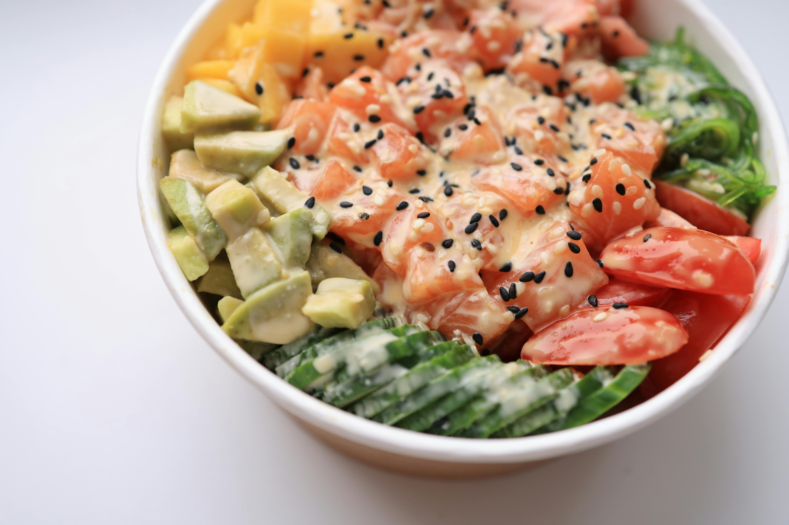

Home
Smoked Salmon Poke Bowl

Description
The best thing about making poke bowls is the ability to customize
toppings around the main ingredient. In this case, it's smoked salmon. The
smoked salmon is marinated with six ingredients for only 30 to 45 minutes,
so you'll have dinner ready in a jiff.
Ingredients
- ¼ cup soy sauce
- 3 green onions, thinly sliced
- 1 tablespoon black sesame oil
- 1 tablespoon rice vinegar
- 1 teaspoon grated ginger
- ½ teaspoon garlic, minced
- 12 ounces smoked salmon, chopped
- 2 cups cooked brown rice
- ¼ cup diced mango
- ¼ cup diced cucumber
- ¼ cup diced avocado
- ¼ cup sliced fresh strawberries
- 1 teaspoon black sesame seeds, or to taste
Steps
-
Combine soy sauce, green onions, sesame oil, rice vinegar, ginger, and
garlic in a bowl. Mix until thoroughly combined. Add salmon and marinate
in the refrigerator for 30 minutes to 1 hour.
-
Divide brown rice among 4 serving bowls. Top with salmon, mango,
cucumber, avocado, and strawberries. Sprinkle black sesame seeds on top.